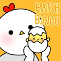

Hatch Bingo
Fais éclore des œufs, complète des lignes de bingo et collectionne de vrais oiseaux.
Nous contacter
Tu as trouvé un bug, une info sur un oiseau qui te semble fausse, tu as une idée ou besoin d’aide pour un achat ? Envoie-nous un e-mail : nous lisons tous les messages.
Astuce : indique le modèle de ton téléphone pour que nous puissions t’aider plus vite.
Questions fréquentes
Comment jouer ?
Touche une case pour la faire grandir d’une étape, ainsi que les cases au-dessus, en dessous, à gauche et à droite : œuf → œuf qui se fend → poussin → de nouveau œuf. Remplis trois lignes (lignes, colonnes ou diagonales) de poussins et le gros œuf éclot : un vrai oiseau en sort. À partir du niveau 25, un coucou se cache parmi les œufs : sa case ne change plus, et une ligne qui passe par elle ne peut pas être complétée.
Où vont mes oiseaux ?
Chaque oiseau que tu fais éclore entre dans le Livre des oiseaux et grandit dans la Volière en temps réel. Reviens le lendemain pour voir comme il a grandi.
Comment gagner des pièces et des objets ?
Tu gagnes des pièces avec les nouvelles grilles, les premières victoires à 3 étoiles, les chapitres terminés et l’Œuf du jour. Touche tes pièces en haut de l’écran pour ouvrir la boutique et faire le plein d’Indice, Défaire et +3 coups (jusqu’à 5 de chaque). Quand tu n’en as plus, tu peux regarder une vidéo facultative pour en avoir un. Avec Pro, tu gagnes deux fois plus de pièces et tu reçois un objet de chaque sorte chaque jour. Les pièces et les objets ne s’achètent pas avec de l’argent.
Que contient Hatch Bingo Pro ?
Un achat unique qui retire la bannière de pub, te permet d’utiliser Indice, Défaire et +3 coups sans vidéo, et ouvre les packs Tropiques, Oiseaux rares, Oiseaux disparus et Cousins des dinosaures (16 oiseaux de plus, 80 nouvelles grilles).
J’ai acheté Pro et j’ai un nouveau téléphone. Comment le récupérer ?
Connecte-toi avec le même identifiant Apple ou compte Google, ouvre le menu et touche Restaurer l’achat.
Est-ce que je perds ma progression si je supprime l’appli ?
Tes oiseaux et ta progression sont enregistrés uniquement sur ton appareil : si tu supprimes l’appli, ils sont effacés.
Le jeu a-t-il besoin d’Internet ?
Non. Tout fonctionne hors ligne. Les pubs et les achats ont besoin d’une connexion.
Confidentialité
Découvre comment nous traitons les données dans notre politique de confidentialité.